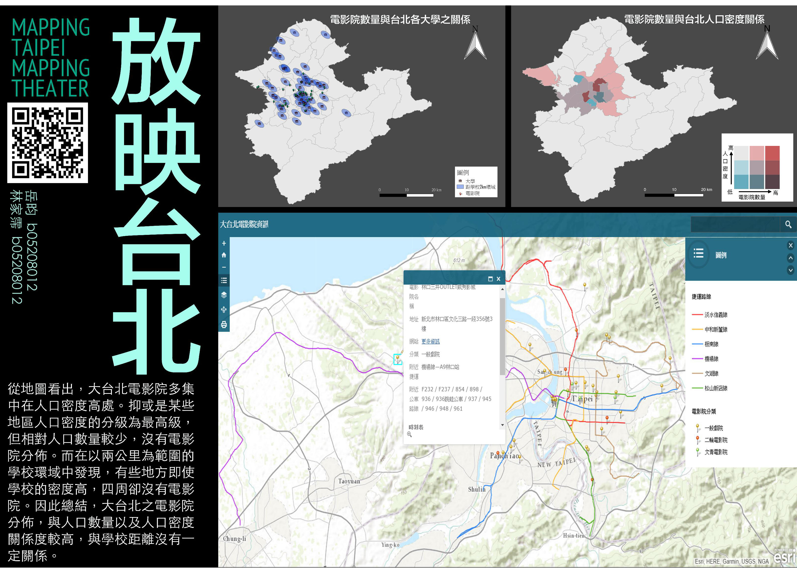

放映台北
作者介紹
地理一 岳 昀
地理一 林家霈
-
不錯很用心，還有手機版讚讚！有加分！
——地理一 朱漢威 -
題材選自我們大學會遇到的事——看電影，
雖然跟期中說的預想不太一樣，沒有做出搭配電影即時資訊，
但看出網站很認真，有許多互動式資訊。
——地理一 杜智賢 -
看的出來很用心，找了非常多平常難以取得的資料。
——地理一 徐豊家
地圖海報

主題說明
主題構想：
大台北地區有將近50間電影院，身為兩個愛看電影的學生，我們常常在選擇電影院上產生障礙， 因此，有了｢放映台北｣這個構想誕生，我們希望結合電影院本身資訊，包括電影院網站、 類型、時刻表，以及捷運公車資訊，使愛看電影的人能快速找到最適合自己的電影院。
另外，在製作電影院資訊的同時，我們也希望可以一併了解電影院與人口密度、 大學分佈是否有其關聯性，想要驗證看看人口數量多寡或一地的繁榮與否是不是對電影院的數量有強大的影響。
分析結果：
由人口密度與電影院之關係圖可以看出大台北的電影院多集中在人口密度較高之行政區， 例如: 林口區，雖然位於大台北較外圍之地區，但因人口密度相對高，電影數量也較多； 不過，若進一步分析，可以發現雖然蘆洲區、永和區等地人口密度分級為最高級， 但因行政區太小，相對人口數少，所以沒有電影院分佈。
接著，由大學與電影院之關係圖，可以看出以學校為中心的2公里環域內的電影院數量， 從中我們發現即使某些地區的學校密度高，環域重疊率高，但四周的電影院卻不多， 因此，我們得出結論，大台北地區的電影院分佈，與人口密度以及人口數量的關聯性較大， 與學校距離反而沒有絕對關係。
資料來源：
- 台北人口資料：地理資訊雲圖資服務平台
- 大學：教育部網站
- 電影院：開眼電影網
- 捷運路線：交通部交通路網數值圖服務網
- 公車資訊：Google map